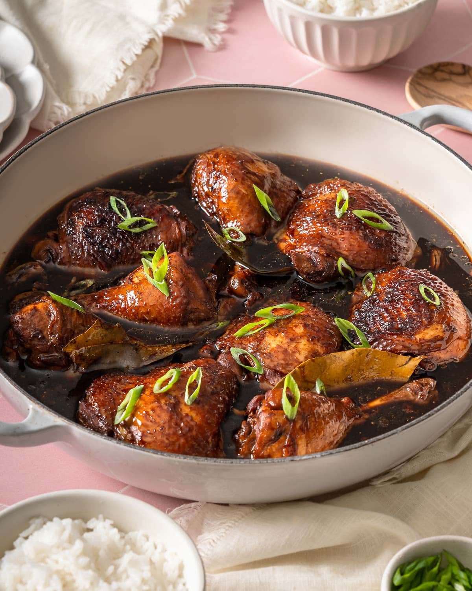

Chicken Adobo

Description
Juicy filipino-styled chicken braised in a sweet and tangy garlic, vinegar, and soy-sauce base, stewed to tender perfection with bay leaves. black peppercorn, and sugar.
Ingredients
- Chicken thighs and drumsticks
- Garlic Cloves
- Unseasoned Rice Vinegar
- Soy Sauce
- Dark Soy Sauce
- Brown Sugar
- Black Peppercorns
- Bay Leaves
Steps
- Marinate the chicken.
- Sear the chicken.
- Add the marinade and chicken.
- Simmer.